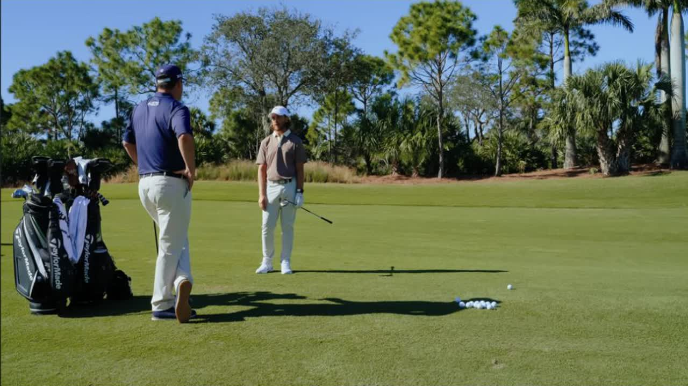
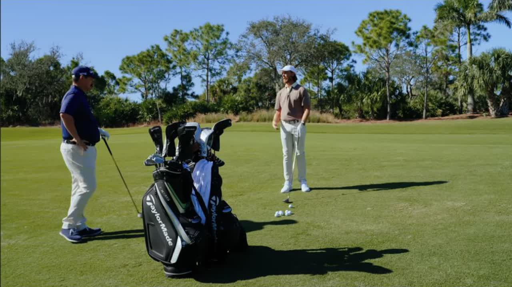
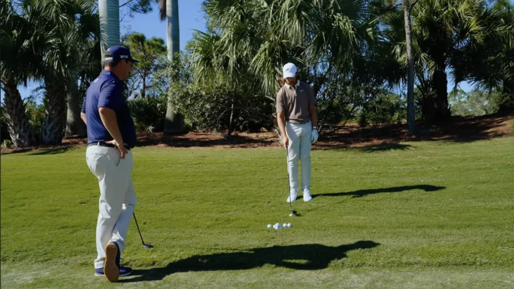

Executive summary
Read the lie first; choose the swing second
Tommy Fleetwood and Johnson Wagner work through three fairway-wood situations. From a flat fairway lie, Fleetwood uses a 5-wood for a 248-yard approach and tries to make the motion feel like the long-irons immediately below it. From a downhill, ball-below-feet lie, he accepts the left-to-right curve, aims farther left, matches his body to the slope, and starts with slightly more pressure in his heels. From rough, he uses a 9-wood with a compact, steep “punch 7-iron” action and lets the head's loft and mass launch the ball.
The deeper lesson is adaptability without complexity. Fleetwood does not invent a new swing for every circumstance. He borrows familiar motions, then changes only the variables the lie demands: target line, balance, ball position, and strike intent.
Distance boundary. These are Fleetwood's stated numbers in this session, not universal club distances. He describes his 5-wood as roughly 250–260 yards and the 9-wood as about 10–15 yards longer than his 4-iron. The video does not provide lofts, launch-monitor data, or a complete carry chart.
Top-of-bag decisions
A higher-lofted wood can be a control club
Fleetwood's long-end options include a mini-driver-type club, a 5-wood, and often a 9-wood. The 9-wood is not there merely because it is easy to launch. It solves two course-management problems: stopping the ball on firm surfaces and preserving a long approach from rough that might otherwise force a lay-up.
Firm and fast course
A 9-wood can be more useful than a 2-iron because the course already supplies run. The equipment's job may be to slow the ball down and create a steeper landing angle.
Repeated approach number
If the course repeatedly presents one long-approach yardage, Fleetwood can select the high-lofted wood that owns that window rather than carrying a theoretically broader club.
Heavy rough
The 9-wood's loft, head size, and mass help the ball escape a lie from which a 3- or 4-iron may not produce a usable approach.
Strong wind
The tradeoff appears into the wind. A 9-wood may not offer enough flight control, so its usefulness depends on the day's conditions rather than its label alone.
Three-lie matrix
The complete shot map
| Situation | Club and distance | Expected ball flight | Setup and swing cue | Decision rule | Time |
|---|---|---|---|---|---|
| Flat fairway lie | Fleetwood: 5-wood from 248 yards. His stated stock window is about 250–260 yards. | Stock flight, aimed just left of the right-side flag. A fade becomes available when the distance is short enough to start left and work toward the pin. | Swing it like the long irons below it. Fairway wood is where Fleetwood's attack angle approaches zero; he does not try to help it into the air. | Favor the green, then decide whether the acceptable miss and available distance justify attacking the pin. | 1:44 |
| Downhill, ball below feet | Fairway wood; exact club and yardage are not stated in this segment. | Left-to-right. Start left and give the slope enough room to move the ball back toward the target. | Match the slope, begin with a little more pressure in the heels to resist being pushed onto the toes, and avoid fighting the curve. | The safe miss is the one that follows the slope. More starting room reduces the urge to manipulate the face and lowers the double-cross risk. | 7:19 |
| Downhill into more wind | Same slope and club context; exact number is not given. | Lower, more compressed version of the same left-to-right pattern. | Move the ball slightly back and compress it more. Keep the aim and slope response unchanged. | Change trajectory without abandoning the lie's natural curve. | 10:13 |
| Settled rough | 9-wood. Red flag about 225–226 yards; Fleetwood judges the lie hot enough to consider the blue flag near 250. | High launch from a compact, descending strike. The demonstrated shot reaches the green. | Slightly open stance; imagine a punch 7-iron through trees; make a steep, choppy strike and let the clubhead supply launch. | Read how the ball is sitting before choosing the target. A powerful lie may release more than the nominal 9-wood number suggests. | 11:14 |
Lie one · Clean fairway
Make the 5-wood feel like the next iron in the set
The first shot is 248 yards to a right-side flag with a light breeze into the players. Fleetwood calls this a comfortable 5-wood because his normal range is roughly 250–260 yards. His target is not automatic. He first checks where the acceptable miss is, whether long is dangerous, how firm the green is, and whether the available distance allows his preferred curve.
At 260 yards, he says he may be unable to begin the ball left and fade it into the right flag because the curve would consume too much distance. At 248 or 240, that shape becomes available. This is an important distinction: target selection and shot shape are constrained by energy, not just imagination.
Technically, Fleetwood wants continuity through the bag. A 9-wood or 5-wood should feel like the next step after 7-, 6-, 5-, and 4-iron. His fairway woods are around the point where his angle of attack reaches zero. He is not steep, but he will sometimes practice taking a divot so that he learns to cover the ball instead of hanging back and trying to lift it.

Common failure the video exposes. Trying to launch the ball can move Fleetwood behind it and add side bend. That introduces both sides of the course. An easy-launching fairway wood is valuable because it lets him deliver the club normally instead of manufacturing height.
Lie two · Downhill and below the feet
Do not fight the shot the ground is giving you
On the uneven lie, Fleetwood predicts left-to-right curvature before discussing mechanics. He gives himself room on the left and allows the ball to return toward the target. If the downslope were more severe, he would shift his body to match it. Because the ground also pushes him toward his toes, he starts with a little more pressure in his heels to remain balanced.
Wagner worries that, as a draw-biased player, deliberately playing a fade can produce a double cross. Fleetwood's answer is strategic rather than technical: aim far enough left that the intended curve has room. The same idea applies in wind. When the player genuinely accepts the environmental influence, there is less need for a last-second save with the hands.
When the wind strengthens, Fleetwood moves the ball slightly back and tries to compress it more. Crucially, he does not change the overall plan. The slope still owns the curve, and the starting line remains left. Only the height changes.

Lie three · Settled rough
The 9-wood turns a lay-up lie into an attacking option
Fleetwood describes the 9-wood as a completely different shot from a 3- or 4-iron. It carries roughly 10–15 yards farther than his 4-iron, but the useful difference is the window: high, soft, and able to emerge from rough. He jokes that it can feel like a 235-yard pitching wedge.
The swing cue came from Tiger Woods in an earlier session: hit the shot like a punch 7-iron through trees. Fleetwood opens his stance slightly and makes a steep, compact, almost chopping strike. The cue sounds counterintuitive because the desired result is high, but the player does not create that height. The head's loft, size, and mass do it.
The target still depends on the lie. The red flag is approximately 225–226 yards, while the back blue flag is around 250. Fleetwood sees that the ball may come out hot, chooses the deeper target, and produces a shot that reaches the green. Wagner's next attempt also comes out fast. The lesson is not that a 9-wood always travels 250 yards; it is that rough can alter launch and run enough to change the target.

Amateur playbook
How to apply the lesson without copying Fleetwood's distances
- Map your own carry windows. Replace Fleetwood's 250–260-yard 5-wood range with your measured median carry and normal dispersion.
- Choose the target after reading the miss. Green firmness, trouble long, wind, and the side that leaves an easy recovery matter before the pin does.
- Keep the fairway-wood motion connected to the long irons. From a clean lie, avoid adding a separate scooping action just because the club has a larger head.
- Let slopes choose the curve. Aim for the expected movement, adjust balance to the ground, and resist trying to cancel the lie with the hands.
- Use a familiar cue from rough. A compact punch-iron feel can simplify a high-lofted wood shot because the club provides the height.
- Judge the lie before choosing the final target. A ball sitting up can launch hot; a buried ball may require a conservative escape even with a 9-wood.
My take
The best instruction here is permission, not a position
Fleetwood does give setup cues, but the stronger lesson is that a golfer does not need to neutralize every condition. The slope can curve the ball. Loft can launch it. The course can provide roll. Once those forces are treated as inputs instead of mistakes, the swing becomes smaller and the target becomes clearer.
The equipment discussion supports the same idea. A 9-wood is not automatically a beginner's club or a wind liability. It is a trajectory tool with a specific operating range. Fleetwood carries it when the course asks for height, stopping power, or rough performance, and leaves it out when wind makes that window less useful. That is a better model for building a bag than defending clubs by prestige or printed number.
Sources and method
What this article is based on
- TaylorMade Golf · How to Hit Fairway Woods from Any Lie. Primary source for all swing cues, club choices, yardages, and timestamps.
- The video's official description and chapter labels. Used to confirm the three-lie structure and source context.
Method: 467 public English-caption rows were reviewed against the visible video and official description. Three frames were exported at 1280×720 from the source player; the hero is the official 1280×720 thumbnail. Yardages are reported only where the speakers state them. The article does not infer lofts, carry numbers, or launch conditions absent from the source.